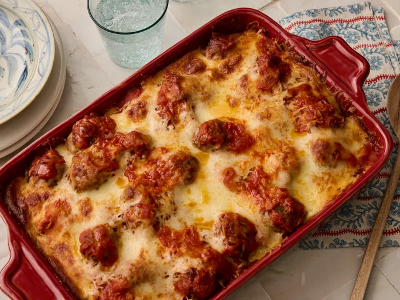

Home
Casserole

Description
All the flavour of a meatball sub in an easy baked casserole. Cubes of
garlic-buttered bread are topped with juicy meatballs, tangy marinara
and plenty of melted cheese.
It is simple to prepare, feeds a crowd, and is perfect for a family
dinner. Serve it with a fresh green salad.
Ingredients
- ⅓ cup chopped green onions
- ¼ cup Italian seasoned bread crumbs
- 3 tablespoons grated Parmesan cheese
- 1 pound ground beef
- 1 (1 pound) loaf Italian bread, cut into 1-inch cubes, or less to taste
- 1 (8 ounce) package cream cheese, softened
- ½ cup mayonnaise
- 1 teaspoon Italian seasoning
- ¼ teaspoon freshly ground black pepper
- 2 cups shredded mozzarella cheese
- 3 cups spaghetti sauce
- 1 cup water (Optional)
- 2 cloves garlic, minced
Steps
- Gather the ingredients. Preheat the oven to 400 degrees F (205 degrees C).
- Mix onions, bread crumbs, Parmesan cheese, and ground beef together in a bowl.
Roll mixture into even-sized meatballs, about 1 inch in diameter; place in a baking
pan. Bake in the preheated oven until beef is no longer pink, 15 to 20 minutes.
Reduce the oven temperature to 350 degrees F (175 degrees C).
- Arrange bread cubes in a single layer in an ungreased 9x13-inch baking dish.
Mix cream cheese, mayonnaise, Italian seasoning, and black pepper together until
smooth. Spread this mixture over each bread cube. Sprinkle with 1/2 cup of the
grated mozzarella cheese.
- Mix spaghetti sauce, water (if using), and garlic together in a large bowl.
Gently stir in meatballs; pour over bread and cheese mixture in the baking pan.
Sprinkle remaining mozzarella cheese evenly over the top.
- Bake at 350 degrees F (175 degrees C) for 30 minutes, or until heated through.
Cook's Note
For a thicker casserole, you can omit the water.
To speed things up, use 1 (12-ounce) bag frozen fully cooked meatballs (about 24) instead
of making the meatballs from scratch.
For an extra-creamy cream cheese layer, stir 1/4 cup milk into the cream cheese mixture before spreading
over the bread.